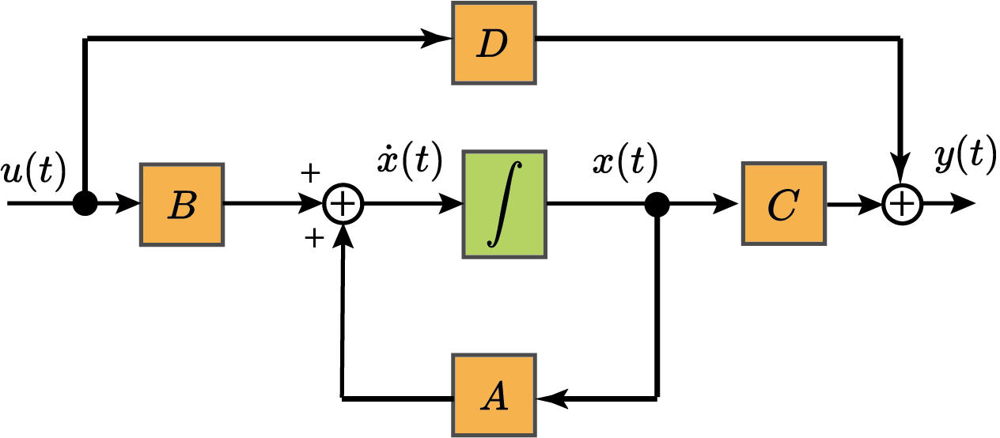
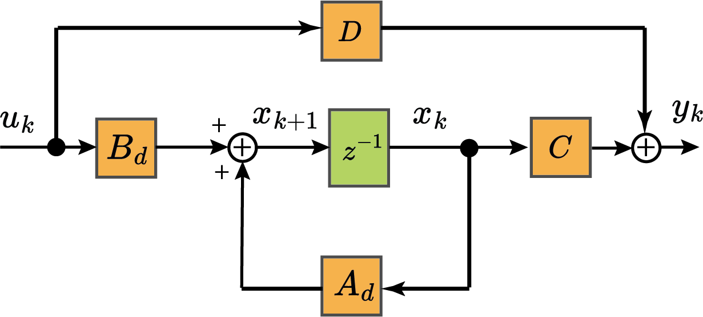

Introduction to the course:
Linear Systems Theory
SEL5911
Prof. Dr. Marcos Rogério Fernandes
February 26, 2025
Objectives:
The objectives of this class are:
- Introduce the course: structure and evaluation methods;
- Overview of the concepts of linear system theory;
- Highlight the importance of linear system theory for research in electrical engineering;
SEL5911 - Theory of Linear Systems
Meetings:
- Every wednesday at 9:00 A.M.
Location: ROOM 3 - SEL/EESC
Contact: marofe@usp.br
Topics
- State-Space Representation of Dynamic Systems;
- Canonical Forms, Jordan Forms and Similarity Transformations;
- Detectability and Stabilizability of Linear Systems;
- Controllability and Observability of Linear Systems;
- Lyapunov Stability Analysis;
- Linear Quadratic Regulator (LQR) Design;
- State Estimation with the Kalman Filter;
- Robust Control using H2 and H∞ Methods;
- Applications of Linear System Theory in Electrical Engineering.
Assessment
Computational Task in MATLAB/Simulink and theoretical exercises:
$T_1,T_2,...T_n \Rightarrow T=\frac{T_1+T_2+\cdots+T_n}{n}$
Overall Test:
$ P: 0\le P \le 10 $The final score is given by the average:$$MF=\frac{T+P}{2}$$
Grade
| Score (0-10) | Letter Grade |
|---|---|
| 8.5 – 10.0 | A (Excellent) |
| 7.0 – 8.4 | B (Good) |
| 5.0 – 6.9 | C (Satisfactory) |
| Below 5.0 | R (Fail) |
Obs: At least 75% attendance.
Content

[password: sel]
- Slides;
- Class notes;
- Matlab scripts;
- References, etc...
References
- [1] Chen, C. T., Linear system theory and design, Oxford University Press, 3rd edition, 1999.
- [2] J.C. Geromel and A.G.B. Palhares. Análise linear de sistemas dinâmicos. Editora Blucher, 2019.
- [3] H. KWAKERNAAK and R. SIVAN. Linear Optimal Control Systems, Willey, 1972.
- [4] S. BOYD, L. GHAOUI, E. FERON, and V. BALAKRISHNAN. Linear Matrix Inequalities in System and Control Theory. SIAM, 1994.
- [5] Michel, Anthony N., Antsaklis, Panos J., A Linear Systems Primer, Birkhauser, 2007.
Questions?

Matlab Course

Simulink Course
Introduction
"Linear system theory is a vast field."
by Chen, C. T.
Linearized Mathematical Model
Introduction
"Linear system theory is a vast field."
by Chen, C. T.
- Develop a solid understanding of linear dynamics systems;
- Eye toward numerical computation;
- Explore Matlab/Simulink as a tool to work with linear systems concepts.
- Conclude with design of robust controllers using LMIs for linear systems.
Analytical Approach
The analytical study of physical systems consists of four parts:
- Modeling;
- Mathematical descriptions;
- Analysis;
- Design.
Linear State Space Model
$$ \dot{x}(t)=Ax(t)+Bu(t)\\ y(t)=Cx(t)+Du(t) $$
$$ x\in\mathbb{R}^n \to \text{states} \quad u\in\mathbb{R}^m \to \text{input}\\ A\in\mathbb{R}^{n\times n}\to \text{dynamic matrix}\quad B\in\mathbb{R}^{n\times m}\to \text{input matrix}\\ y\in\mathbb{R}^p \to \text{output}\\ C\in\mathbb{R}^{p\times n}\to \text{output matrix}\\ D\in\mathbb{R}^{p\times m}\to \text{direct transmission}\\ $$Linear State Space Model

Linear State Space Model (discrete)
$$ \begin{aligned} x_{k+1}&=A_dx_k+B_du_k\\ y_k&=Cx_k+Du_k \end{aligned} $$
$$ x\in\mathbb{R}^n \to \text{states} \quad u\in\mathbb{R}^m \to \text{input}\\ A_d\in\mathbb{R}^{n\times n}\to \text{dynamic matrix}\quad B_d\in\mathbb{R}^{n\times m}\to \text{input matrix}\\ y\in\mathbb{R}^p \to \text{output}\\ C\in\mathbb{R}^{p\times n}\to \text{output matrix}\\ D\in\mathbb{R}^{p\times m}\to \text{direct transmission}\\ $$Linear State Space Model (discrete)

Linear Algebra Review
$$ (AB)_{n\times p}=\begin{bmatrix} - & (l_1^A)^\trp & - \\ - & (l_2^A)^\trp & - \\ &\vdots \\ - & (l_n^A)^\trp & - \\ \end{bmatrix}\begin{bmatrix} | & | & \cdots & |\\ c_1^B & c_2^B & \cdots & c_p^B \\ | & | & \cdots & | \end{bmatrix} $$
Linear Algebra Review
$$ (AB)_{n\times p}=\begin{bmatrix} \langle l_1^A, c_1^B\rangle & \langle l_1^A, c_2^B\rangle & \cdots & \langle l_1^A, c_p^B\rangle\\ \langle l_2^A, c_1^B\rangle & \langle l_2^A, c_2^B\rangle & \cdots & \langle l_2^A, c_p^B\rangle\\ \vdots & \vdots & \ddots & \vdots \\ \langle l_n^A, c_1^B\rangle & \langle l_n^A c_2^B\rangle & \cdots & \langle l_n^A, c_p^B\rangle\\ \end{bmatrix} $$
Linear Algebra Review
$$ (AB)_{n\times p}=\begin{bmatrix} | & | & \cdots & |\\ c_1^A & c_2^A & \cdots & c_m^A \\ | & | & \cdots & | \end{bmatrix} \begin{bmatrix} - & (l_1^B)^\trp & - \\ - & (l_2^B)^\trp & - \\ &\vdots \\ - & (l_m^B)^\trp & - \\ \end{bmatrix} $$
Linear Algebra Review
$$ (AB)_{n\times p}=c_1^A(l_1^B)^\trp +c_2^A(l_2^B)^\trp+\cdots+c_m^A(l_m^B)^\trp $$ Therefore, $$ (AB)_{n\times p}=\sum_{k=1}^m \begin{bmatrix} |\\ c_k^A \\ | \end{bmatrix}_{n\times 1}\cdot \begin{bmatrix} - & (l_k^B)^\trp & - \end{bmatrix}_{1\times p} $$
Linear Algebra Review
Linear Algebra Review
Linear Algebra Review
Linear Algebra Review
Symmetric matrix: $$ A^T = A $$
For any $A\in\mathbb{R}^{n\times n}$:
$$ A+A^T \quad \text{is symmetric} $$ $$ AA^T \quad \text{is symmetric} $$Linear Algebra Review
Anti-Symmetric matrix: $$ A^T = -A $$
For any $A\in\mathbb{R}^{n\times n}$:
$$ A+A^T = 0 $$ $$ AA^T =-A^2 $$Linear Algebra Review
Orthogonal matrix: $$ A^TA=AA^T = I $$
Example: rotation matrices!Linear Algebra Review
Trace Operator: $$ \text{tr}[A]=\sum_{i=1}^n a_{ii}=\sum_{i=1}^n \lambda_i $$
Trace is linear and commutative: $$ \text{tr}[\alpha A+\beta B]=\alpha\text{tr}[A]+\beta\text{tr}[B]\\ \text{tr}[AB]=\text{tr}[BA] $$Linear Algebra Review
Determinant Operator: $$ \text{det}[A]=\prod_{i=1}^n \lambda_i $$
Determinant is not linear but is commutative (for $A,B$ square matrices): $$ \text{det}[\alpha A+\beta B]\neq \alpha\text{det}[A]+\beta\text{det}[B]\\ \text{det}[AB]=\text{det}[BA]=\text{det}[A]\text{det}[B] $$Linear Algebra Review
Eigenvalues and Eigenvectors: $$ Av=\lambda v $$
Eigenvalue Operator: $$ \lambda\{A\}=\{\lambda_1,\lambda_2,\ldots,\lambda_n\} $$ Matrix (semi)-positive definite: $$ A\ge 0 \Rightarrow \lambda \{A\} \ge 0 $$Linear Algebra Review
Linear Algebra Review
Linear Algebra Review
Linear Algebra Review
Solution of Linear State Space Model
$$ \dot{x}(t)=Ax(t)\quad \text{with} \quad x(0)=x_0 $$
$$ x(t)=e^{At}x_0 $$ Matrix Exponential: $$ e^{At}=I+At+\frac{1}{2!}A^2t^2+\frac{1}{3!}A^3t^3+\cdots $$Computation of $e^{At}$
Computation of $e^{At}$
Homework (T1)
Find an example of a linear system in your area of interest. Describe the system in terms of the state-space model.
- Give a brief explanation of the system and the matrices.
- Use Latex;
- Upload the homework (pdf) on the e-discipline platform.